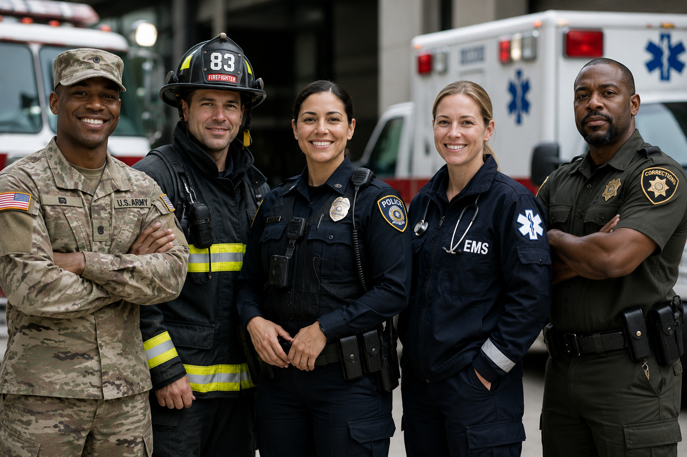
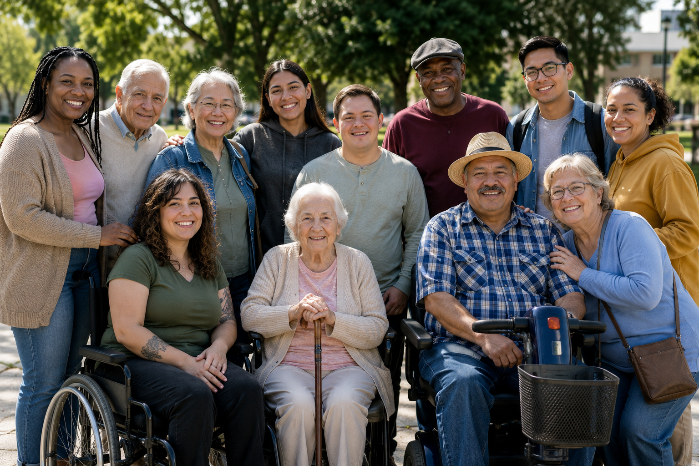

Together, Building Income, Opportunity, and Well-Being.
Government Workforce Network LLC is a consulting workforce modernization, workforce intelligence, and innovation-focused organization supporting AI-enabled engagement, talent visibility, workforce accessibility, operational readiness, and emerging workforce solutions across evolving public and private sector ecosystems.

Who We Serve
Students
Helping emerging talent become more visible, competitive, and connected to employers beyond traditional experience filters.
Employers
Supporting employer visibility, recruitment engagement, virtual events, workforce readiness, and partnership opportunities.

Veterans | Firefighters | EMS | Emergency Responders | Law Enforcement | Correctional Personnel
Creating pathways for experienced talent, business ownership visibility, and workforce transition support.
Professionals
Supporting career visibility, networking, and access to evolving workforce opportunities.
Entrepreneurs
Helping small businesses and emerging founders gain visibility, structure, and opportunity access.

Disabled Community | Non-Tech Savvy Individuals | Individuals Seeking Growth & Opportunity
Building community-centered workforce initiatives designed around access, visibility, and practical growth.
Not a single service. A connected workforce platform.
We are structured as an ecosystem connecting programs, solutions, engagement, virtual experiences, employer visibility, and community-driven initiatives.
Programs
University Network, Workforce TV, Talent Connect, and Career Connection Festivals.
Solutions
Consulting, workforce innovation, employer visibility, and virtual event solutions.
Virtual Lounges
Online spaces for hiring, networking, training, meetings, and engagement.
Community
Workforce initiatives supporting students, veterans, professionals, and entrepreneurs.
Featured Programs
These programs give us reach, relevance, and a growth engine.
University Network
887 university network connections built to expand student visibility and employer access.
Career Connection Festivals
Virtual career engagement experiences connecting employers with talent communities.
Workforce TV
Thought-leadership conversations on recruitment, hiring, classification, and workforce change.
Talent Connect USA
National talent visibility and connection pathway for U.S.-based participants.
Talent Connect Global
International workforce visibility and connection program for global participants.
Solutions
We support organizations seeking practical, human-centered, and AI-aligned workforce solutions designed for today’s evolving workforce environment.
Consulting
Workforce strategy, program design, employer engagement, and operational readiness support.
Workforce Intelligence
Modern insight-driven support for talent visibility, engagement, classification, and future readiness.
Virtual Engagement
One-day hiring events, virtual lounges, events, career festivals, and online workforce experiences.
A Note from the Founder
After 20+ years working inside HR and recruitment systems, I saw firsthand how workforce systems can leave people behind and how AI would make visibility even more important.
I built Government Workforce Network LLC because workforce development needs a model that centers real people, lived experience, practical solutions, and community connection.
As a hands-on founder, I lead the creation, workflows, and solutions to ensure our work remains practical, impactful, measurable, and built with compliance in mind.
We are building something different because this moment requires something different.
Government Workforce Network LLC
Ready to connect?
Explore our workforce programs, university engagement, virtual experiences, consulting solutions, and national visibility initiatives.
Connect With Us
For consulting, collaboration, initiatives, or workforce partnership inquiries, contact us below.
Laguna Hills, CA 92653